| Unique | Missing Pct. | Mean | SD | Min | Median | Max | Histogram | |
|---|---|---|---|---|---|---|---|---|
| baseline.value | 48 | 0 | 133.3 | 9.8 | 106.0 | 133.0 | 160.0 | |
| accelerations | 20 | 0 | 0.0 | 0.0 | 0.0 | 0.0 | 0.0 | |
| fetal_movement | 102 | 0 | 0.0 | 0.0 | 0.0 | 0.0 | 0.5 | |
| uterine_contractions | 16 | 0 | 0.0 | 0.0 | 0.0 | 0.0 | 0.0 | |
| light_decelerations | 16 | 0 | 0.0 | 0.0 | 0.0 | 0.0 | 0.0 | |
| severe_decelerations | 2 | 0 | 0.0 | 0.0 | 0.0 | 0.0 | 0.0 | 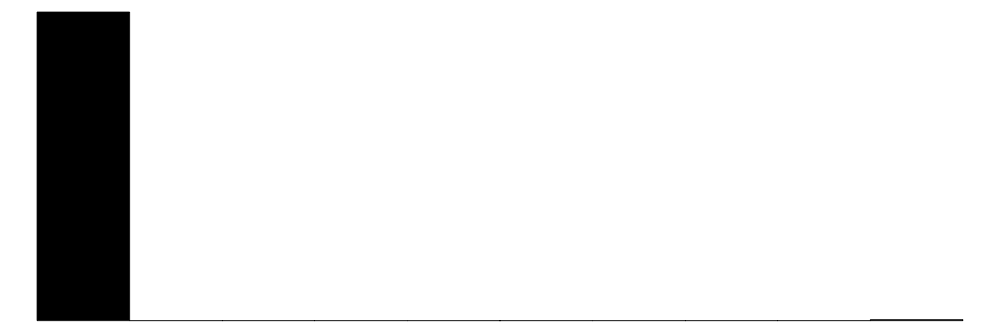 |
| prolongued_decelerations | 6 | 0 | 0.0 | 0.0 | 0.0 | 0.0 | 0.0 | |
| abnormal_short_term_variability | 75 | 0 | 47.0 | 17.2 | 12.0 | 49.0 | 87.0 | 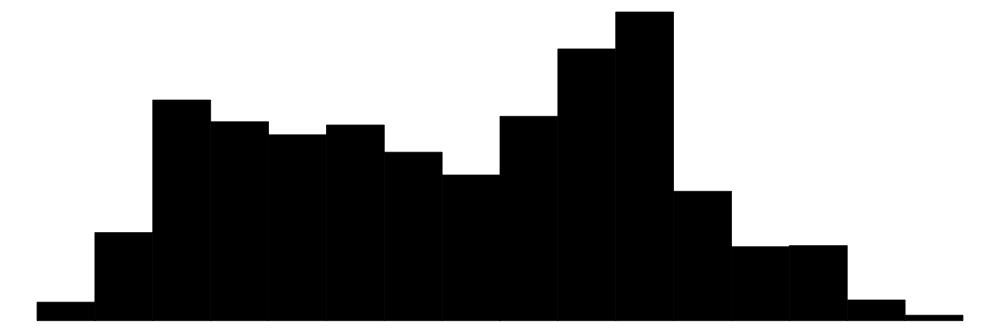 |
| mean_value_of_short_term_variability | 57 | 0 | 1.3 | 0.9 | 0.2 | 1.2 | 7.0 | |
| percentage_of_time_with_abnormal_long_term_variability | 87 | 0 | 9.8 | 18.4 | 0.0 | 0.0 | 91.0 | 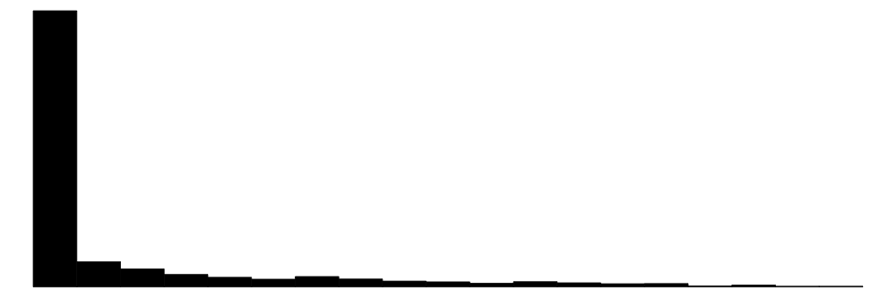 |
| mean_value_of_long_term_variability | 249 | 0 | 8.2 | 5.6 | 0.0 | 7.4 | 50.7 | |
| histogram_width | 154 | 0 | 70.4 | 39.0 | 3.0 | 67.5 | 180.0 | |
| histogram_min | 109 | 0 | 93.6 | 29.6 | 50.0 | 93.0 | 159.0 | |
| histogram_max | 86 | 0 | 164.0 | 17.9 | 122.0 | 162.0 | 238.0 | |
| histogram_number_of_peaks | 18 | 0 | 4.1 | 2.9 | 0.0 | 3.0 | 18.0 | |
| histogram_number_of_zeroes | 9 | 0 | 0.3 | 0.7 | 0.0 | 0.0 | 10.0 | |
| histogram_mode | 88 | 0 | 137.5 | 16.4 | 60.0 | 139.0 | 187.0 | |
| histogram_mean | 103 | 0 | 134.6 | 15.6 | 73.0 | 136.0 | 182.0 | |
| histogram_median | 95 | 0 | 138.1 | 14.5 | 77.0 | 139.0 | 186.0 | |
| histogram_variance | 133 | 0 | 18.8 | 29.0 | 0.0 | 7.0 | 269.0 | |
| histogram_tendency | 3 | 0 | 0.3 | 0.6 | -1.0 | 0.0 | 1.0 | 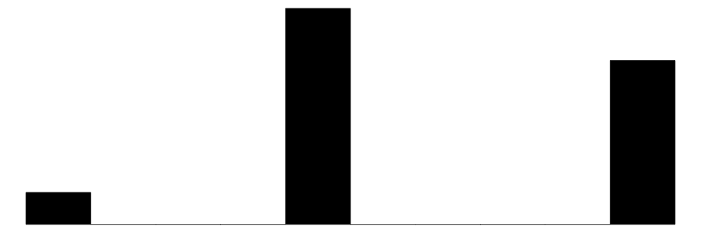 |
| fetal_health | 3 | 0 | 1.3 | 0.6 | 1.0 | 1.0 | 3.0 | 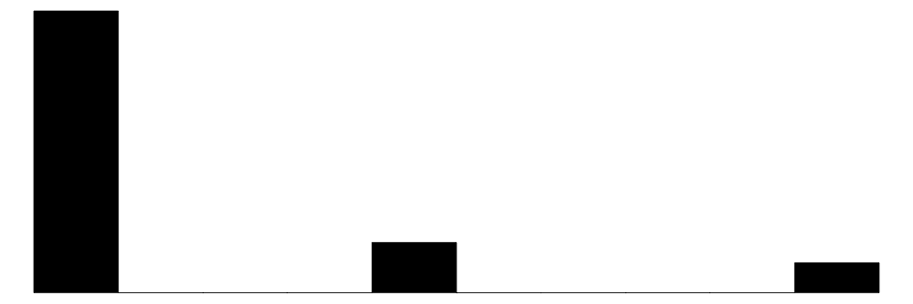 |
Healthcare Analysis
Health Care Analysis
Fetal Health Care (FHC)
Overview of FHC1
A cardiotocogram (CTG) is a technical recording of the fetal heartbeat and uterine contractions during pregnancy. It is primarily used in obstetrics to monitor the well-being of the fetus during the third trimester of pregnancy and during labor.
The CTG provides important information about the fetal heart rate (FHR) and its response to uterine contractions, which helps healthcare providers assess the fetal condition and detect any signs of fetal distress.
This data was obtained from a data set on Kaggle and was used for public analysis. The data set was used but the analysis is orginal to the author in order to develop independent meaning from the data set.
Key Components of a CTG:
Fetal Heart Rate (FHR):
Baseline Rate:
The average heart rate of the fetus, usually measured over a period of 10 minutes. A normal baseline FHR is between 110 and 160 beats per minute (bpm).
Variability:
Fluctuations in the baseline FHR, which indicate the health and responsiveness of the fetal autonomic nervous system.
Accelerations:
Temporary increases in FHR, typically associated with fetal movements. Accelerations are generally a positive sign, indicating good fetal well-being.
Decelerations:
Temporary decreases in FHR. These can be benign or indicate potential issues, depending on their timing, duration, and relationship to uterine contractions.
Uterine Contractions:
The frequency, duration, and intensity of uterine contractions are recorded. This helps in assessing the labor progress and the fetal response to the contractions.
Types of Monitoring:
External CTG:
Uses external sensors placed on the mother’s abdomen to monitor the FHR and uterine contractions. It is non-invasive and commonly used during prenatal visits and early labor.
Internal CTG:
Involves placing an electrode on the fetal scalp and a pressure catheter inside the uterus. This method provides more accurate data but is invasive and typically used when closer monitoring is needed during labor.
Interpretation:
Healthcare providers analyze the CTG to assess fetal well-being. They look at the baseline FHR, variability, accelerations, and decelerations. The patterns observed can help in determining if the fetus is in distress and if any interventions, such as changes in maternal position, oxygen administration, or expedited delivery, are needed.
Importance of CTG:
Detection of Fetal Distress:
Helps identify signs of hypoxia (lack of oxygen) or other issues that may compromise fetal health.
Labor Management:
Assists in making informed decisions about labor progress and interventions.
Reassurance:
Provides reassurance to expectant mothers when the fetal heart rate and patterns are normal.
Overall, a cardiotocogram is a crucial tool in prenatal care and labor management, helping ensure the safety and health of both the mother and the baby.
Dataset
This dataset contains 2126 records of features extracted from Cardiotocogram exams, which were then classified by expert obstetrician into 3 classes:
1 - Normal
2 - Suspect
3 - Pathological
Features:
‘baseline value’ - FHR baseline (beats per minute)
‘accelerations’ - Number of accelerations per second
‘fetal_movement’ - Number of fetal movements per second
‘uterine_contractions’ - Number of uterine contractions per second
‘light_decelerations’ - Number of light decelerations per second
‘severe_decelerations’ - Number of severe decelerations per second
‘prolongued_decelerations’ - Number of prolonged decelerations per second
‘abnormal_short_term_variability’ - Percentage of time with abnormal short term variability
‘mean_value_of_short_term_variability’ - Mean value of short term variability
‘percentage_of_time_with_abnormal_long_term_variability’ - Percentage of time with abnormal long term variability
‘mean_value_of_long_term_variability’ - Mean value of long term variability
‘histogram_width’ - Width of FHR histogram
‘histogram_min’ - Minimum (low frequency) of FHR histogram
‘histogram_max’ - Maximum (high frequency) of FHR histogram
‘histogram_number_of_peaks’ - Number of histogram peaks
‘histogram_number_of_zeroes’ - Number of histogram zeros
‘histogram_mode’ - Histogram mode
‘histogram_mean’ - Histogram mean
‘histogram_median’ - Histogram median
‘histogram_variance’ - Histogram variance
‘histogram_tendency’ - Histogram tendency
Target Outcome Variable: Fetal Health
‘fetal_health’ Tagged as:
1 - Normal
2 - Suspect
3 - Pathological
Bottom Line
Overall, based on this data set, we can reliably predict fetal outcomes based on CTG data. In this analysis, we perform a multinomial regression, random forest, decision tree, and XGBoost. Each model had prediction accuracy ratings from mid-80% to mid-90%, with XGBoost performing the best. However, the most interpretable and nearly as accurate was the decision tree using the rpart library.
Here is the primary decision tree graphic that can be used to determine which factors are important and can be used to determine fetal health outcomes based on CTG ratings (again, based on this provided data set):

Next Steps
- Evaluate this data set with other sources of data from other diagnostic devices.
- Evaluate these models from CTG data from hospitals to validate the accuracy of the models.
- Review the decision tree with doctors in the field that use CTG devices to see if the decision tree makes sense based on their experience and determine whether it is simple and easy to understand for practical purposes.
Exploratory Data Analysis
This section analysis the variables from CTG dataset to understand their characteristics in more depth before doing any analysis.
Here are detailed plots of the main variables and their relationship to fetal health.


Deeper Dive Into FHR
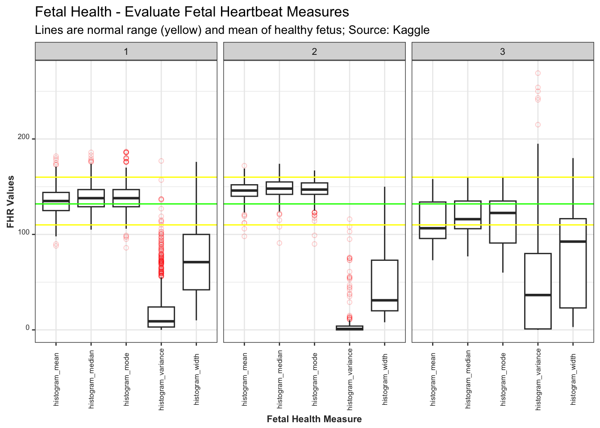
Correlation Analysis
This section provides more definitive view of the correlation of variables from the data set.

Key Findings:
Fetal Health gets worse (score goes up) as ‘abnormal short term variability’, ‘percentage of time with abornmal long term variability’, and ‘prolonged decelerations’ goes up (positively correlated).
Fetal Health gets better (‘fetal health’ score goes down) as ‘accelerations’ and ‘uterine contractions’ go up (negatively correlated).
There appears to be significant colinearity in this data set.
Models
Multinomial Logistic Regression
The multionomial model has an accuracy level of 0.8714734
And here is the confusion matrix:
Predicted
Actual 1 2 3
1 476 9 7
2 31 54 10
3 11 14 26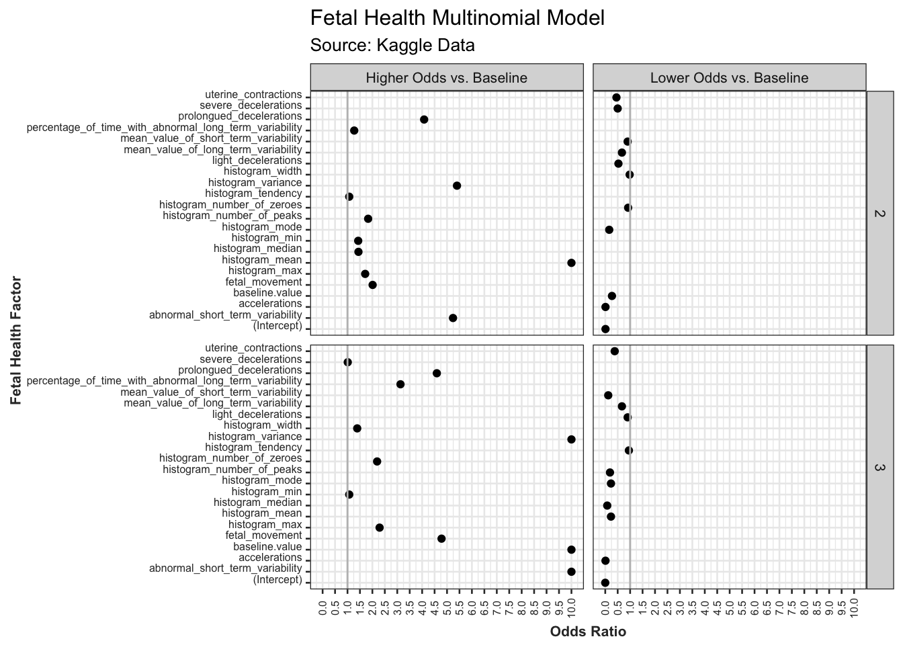
Interpret Odds Ratios:
Odds Ratio > 1: Indicates that an increase in the predictor variable is associated with higher odds of being in the respective response category compared to the baseline category.
Odds Ratio < 1: Indicates that an increase in the predictor variable is associated with lower odds of being in the respective response category compared to the baseline category.
Odds Ratio = 1: Indicates no change in odds with respect to the baseline category.
Plot of Relationship of Key Variables

Random Forest
The accuracy level of this model is 0.9285042
Random Forest - Parsimonious
This model has fewer variables and is tested to make the model as parsimonious as possible to improve the stability of the model across different CTG data sets.
Here are the results from the parsimonious test:
The accuracy level of this model is 0.8617121
Decision Tree
[1] 0.9248826The accuracy level of this model is 0.9248826
Here are the results from the decision tree model:
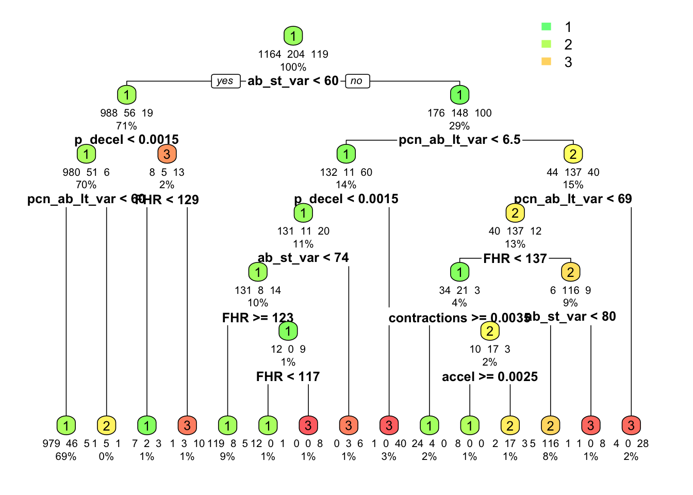
Here is the simplified decision tree logic to arrive at determining if tehre is a severe position:
If(abnormal_short_term_variation is < 60) & (prolonged_decelerations < .0015) & (fetal_heart_rate < 129)
If(abnormal_short_term_variation is > 60) & (percentage_of_time_with_abnormal_long_term_variability < 6.5) & (prolonged_decelerations > .0015)
If(abnormal_short_term_variation is > 74) & (percentage_of_time_with_abnormal_long_term_variability < 6.5) & (prolonged_decelerations < .0015)
If(abnormal_short_term_variation is > 60) & (percentage_of_time_with_abnormal_long_term_variability < 6.5) & (prolonged_decelerations < .0015) & (abnormal_short_term_variation is < 74) & (FHR between 117 and 123)
If(abnormal_short_term_variation is > 60) & (percentage_of_time_with_abnormal_long_term_variability > 69)
If(abnormal_short_term_variation is > 60 and <80) & (percentage_of_time_with_abnormal_long_term_variability > 6.5 and <69) & (FHR > 137)
Here is the raw output from the model itself, which some may find more readable:
prob.1 prob.2 prob.3
1 0.07142857 0.21428571 0.71428571
2 0.00000000 0.33333333 0.66666667
6 0.12500000 0.00000000 0.87500000
11 0.11111111 0.00000000 0.88888889
19 0.02439024 0.00000000 0.97560976
31 0.00000000 0.00000000 1.00000000
rule
1 ab_st_var < 59.5 & p_decel >= 0.0015 & FHR >= 128.5
2 ab_st_var >= 59.5 & pcn_ab_lt_var < 6.5 & p_decel < 0.0015 & ab_st_var >= 74
6 ab_st_var >= 59.5 & pcn_ab_lt_var >= 6.5 & pcn_ab_lt_var >= 68.5
11 ab_st_var >= 59.5 & pcn_ab_lt_var >= 6.5 & pcn_ab_lt_var < 68.5 & FHR >= 136.5 & ab_st_var >= 79.5
19 ab_st_var >= 59.5 & pcn_ab_lt_var < 6.5 & p_decel >= 0.0015
31 ab_st_var >= 59.5 & pcn_ab_lt_var < 6.5 & p_decel < 0.0015 & ab_st_var < 74 & FHR < 123 & FHR >= 117XGBoost
This section utilizes the XGBoost package as an alternative ensemble technique. XGBoost stands for “Extreme Gradient Boosting” and utilizes decicion trees with gradient boosting, meaning decision trees are constructed sequentially, where each tree tries to correct the errors of the previous trees. It optimizes a loss function by adding trees to the model that reduce this loss and eliminates trees that increases loss. This is a very popular optimization method currently and did yield the best results from this analysis.
The accuracy of this model is 0.9405321
Additional visualizations of the XGBoost here:
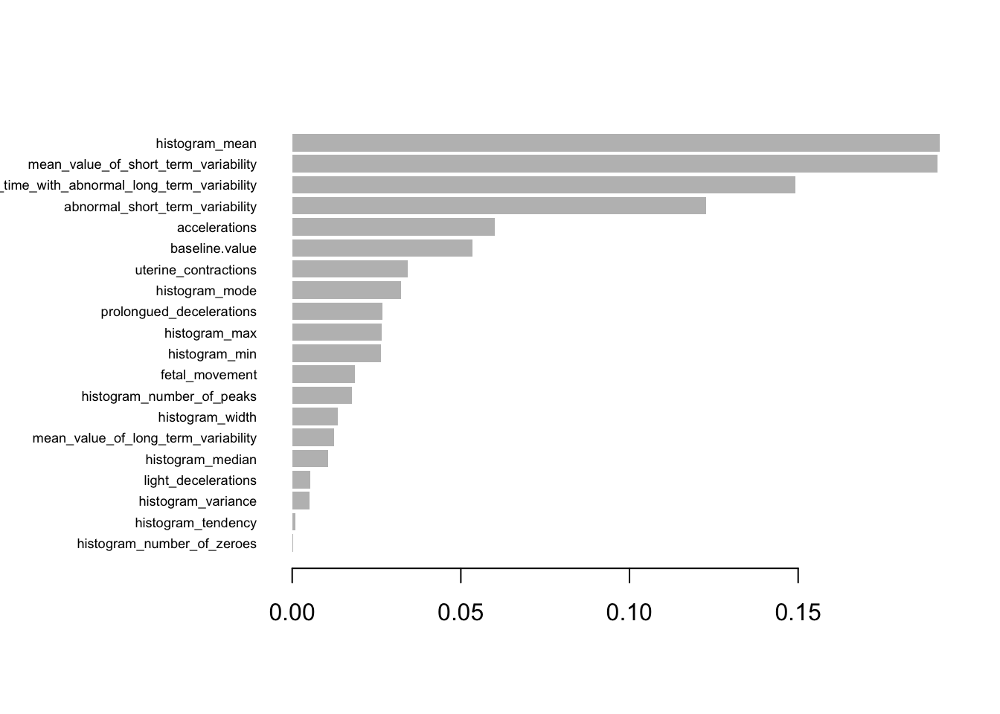
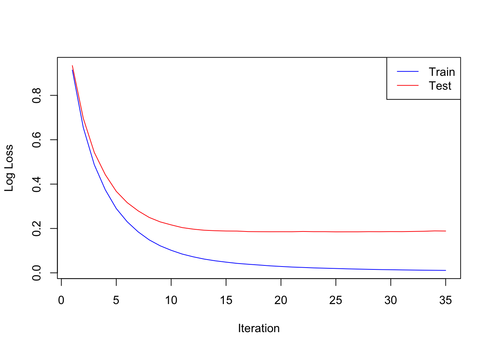
Let’s remove the historical data, as it may be over fitting the model
The accuracy of this model is also high at 0.9341693 This is a good model due to fewer factors for potentially covariant variables.
Here is visualization of this more parsimonious model:
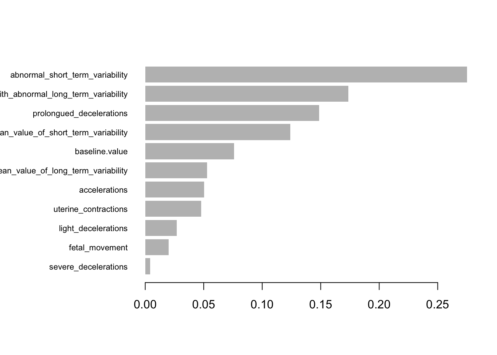
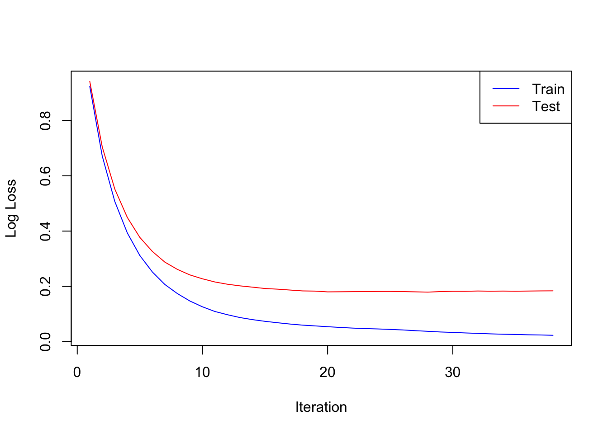
Principal Component Analysis (PCA)
This section will evaluate the principal components in the data set. PCA is a method to reduce dimensionality (fewer predictor variables) in the data set by organizing one or more covaried predictors into “factors” that are linear combinations of the original variables. Factors or sorted by the maximum variation they explain in the data. It utilizes a covariance matrix to understand the relationship between variables, similar to the correlation matrix earlier in this document. The net of this is that most important variables that explain the data and that are uncorrelated are identified and can be used for a better, more stable analysis. The downside is that it does require more interpretation and complexity in the explanatory aspect of the model.
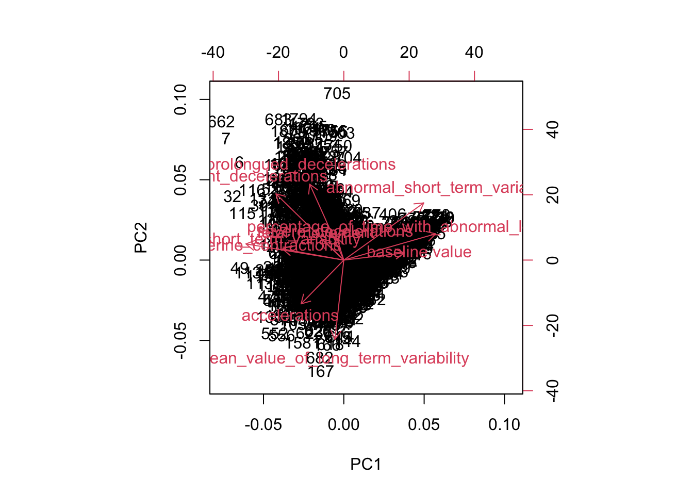
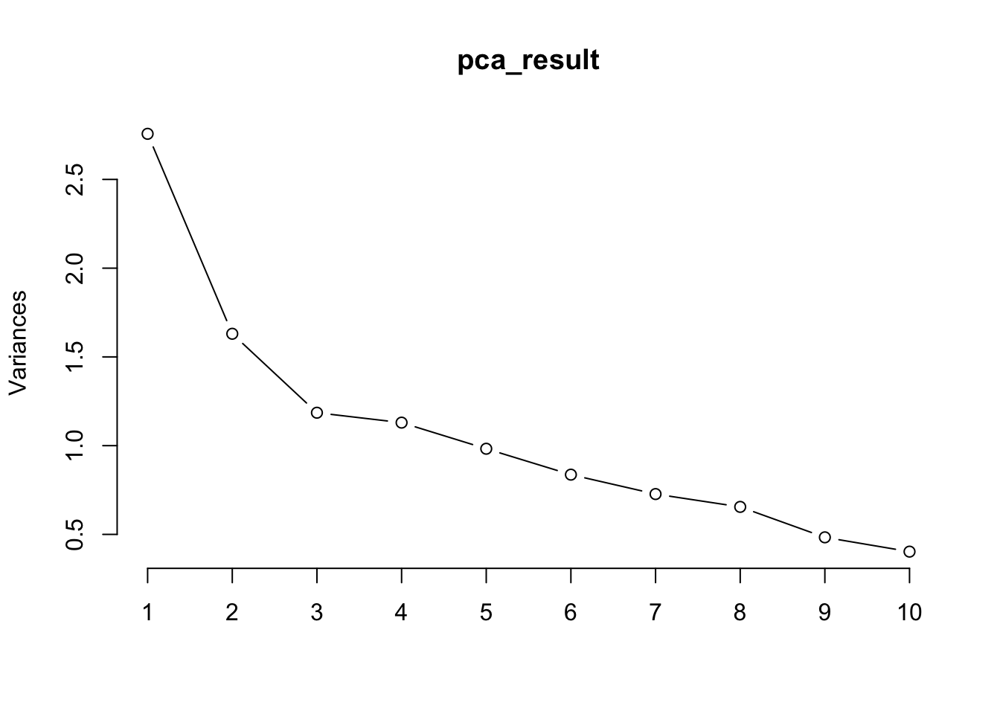